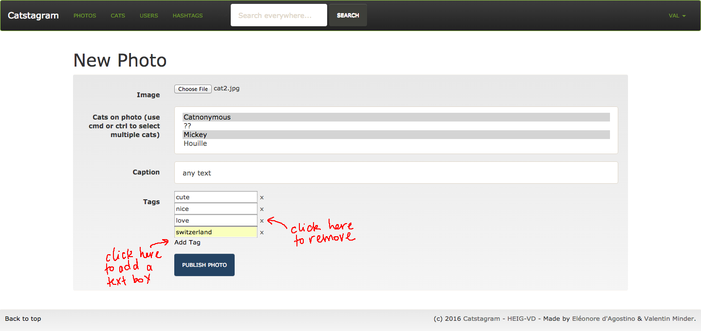
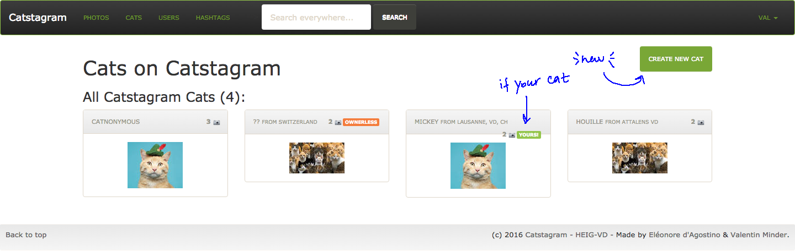

Simple Cat version of Instagram in Ruby on Rails - for Webrails class at HEIG-VD.
This is the final report. If you're not into reading documentation and prefer to test yourself, go directly to Installation Indications
This is a Ruby on Rails project for WebRails class at HEIG-VD, Yverdon-les-Bains, Switzerland, done by Eleonore d'Agostino and Valentin Minder in Spring 2016.
This report will go through the planned specifications and management and check against the final project to check for consistency and project success. At the end you'll find a documentation how to install and use the website.
Catstagram is a simple version of Instagram for photos of cats only. It allows registered users to upload photos of cats, tag them and share them with all their friends, because sharing is caring ;3
The more you share, the more views you get! :D
Guests can see photos of specific cats or uploaded by specific users! And cats by categories, of course!
Be cautious, if you upload anything other than a cat photo and you get reported too many times, the admins might ban you!
See the following image:
A guest is a non-registered or non-logged visitor of the website. They are limited to VIEW capacities on everything, and have no right to EDIT. A guest may:
A user is a registered and logged visitor of the website who doesn't have admin rights. A user has VIEW capabilites on everything, and EDIT capabilites on their own data. A user may:
An admin is a registered and logged visitor of the website that has admin rights. An admin has the right to VIEW and EDIT on everything. An admin may:
Note that views, likes and reports counts are not related to users. View counts reflects the number of times a photo was opened in a browser, even if it was done 10x by the same person. The same goes with like and reports, but those are only available for logged users. This system is open to abuse but it allows for a simpler system, otherwise it would require a lot more relations and be more complex.
Their is the conceptual schema:

The relational schema is obvious from the conceptual one, or see the schema.yml file.
A user is a registered human visitor that may have some role (and admin rights). Fields generated by Devise for account creation and authentication are not shown (such as login/password), as well as fields handled by Ruby by default (such as created_at). Users own cats and upload photos (therefore cats belongs to their user owner, and photos are uploaded by users).
Cats are tagged on photos, and at least one cat must be tagged on every photo. If the cat is unknown, a special entity called the "Chanonyme" (Catnonymous) is tagged instead. If the cat becomes known, the owner of the photo or the admin may change the tag.
Cats may not have an owner. In that case, they are only editable by admins, and admin may assign them an owner. Such "non-owned cat" may be merged into an owned cat by the admin (the non-owned cat profile is destroyed and all its tag on photos are forwarded to the owned cat).
Hashtags are similar to categories, where any photo may belong to any number of hashtags (from 0 to N).
The following fields are set once and forever, and cannot be edited, even by an admin:
All the counts fields cannot be edited, even by an admin. They are set to 0 by default and incremented automatically when the related actions are performed. However, admins may reset the report count to 0 when handling reports.
Admins may set the banned_until field to ban a user (otherwise this field is left blank). Users cannot connect until the end of the ban period.
In all entities, there is at least one field that is mandatory. All the others are optional (or they have special meaning, explained before)
Users may add/edit/remove all other data:
Users may remove a photo they uploaded, a profile of a cat they own, or even their whole profile (deleting a user will delete all uploaded photos, but cats will remain, without an owner).
As the admin has CRUD rights on everything, they can do everything a user can on all users' data. Moreover, they have special CRUD rights (in that sense, edit means all CRUD actions)
banned_until field and reset the report_count fieldWe use Rails' standard MVC structure, with Models in app/models, Views as webpages in app/views and Controllers in app/controllers.
photos_controller#index_mainusers_controller#indexusers_controller#showcats_controller#indexcats_controller#showhashtags_controller#indexphotos_controller#indexhashtags_controller#showusers_controller#showcats_controller#showphotos_controller#showphotos_controller#searchDevise::RegistrationsController and registrations_controller (for custom values of forms)Devise::SessionControllerusers_controller#new and users_controller#create are removed, because there are handled by devise sign-up.application_controller.rb for rescue_from CanCan::AccessDeniedusers_controller#editphotos_controller#newphotos_controller#editphotos_controller#destroycats_controller#newcats_controller#editcats_controller#destroyusers_controller#destroyphotos_controller#reportphotos_controller#showphotos_controller#likephotos_controller#reportedphotos_controller#resetphotos_controller#destroyusers_controller#ban and users_controller#ban_updateusers_controller#bannedusers_controller#destroyhashtags_controller#newhashtags_controller#index_admin[NAME]s_controller#edit and users_controller#edit_roles and users_controller#save_roles[NAME]s_controller#destroyWhile our original plan was to allow optional tag auto-completion during photo upload, this proved to be beyond our skills even after extensive reading on the subject. It was already hard enough implementing dynamic text fields (pressing the "Add Tag" button adds a new text field whose content will be correctly saved), but we couldn't find how to work an optional drop-down in without using a collection_select, which... we can't type in.
So we went with our second idea.
The final AJAX we use allows us to like photos without reloading the page, and updates the like count on the photo accordingly, after which the like button disappears.
This is done via three files:
app/views/photos/show.html.erb, we set up the like button link_to with the option remote: true, along with a specific id so we can refer back to it. We also give an id to a span containing the @photo.like_count value.app/controllers/photos_controller.rb, in the like function, we render the update_likes.js file after we finish the checks and modifications we wanted.app/views/photos/update_likes.js, we have simple jQuery commands to hide the like button via its id, and replace the old like_count in the span with the new like_count value we computed in the controller.The only major library we used was ImageMagick, for the purpose of automatically resizing images to create thumbnails. While we could have just used HTML tags to keep only one copy of each image and display, this requires downloading all the images at full size and slows down the page loading considerably, especially for users with poor connections.
As is, when an image is uploaded, we automatically save a resized copy of it for use as thumbnails. This is done in the app/uploaders/image_uploader.rb file:
version :thumb do
process :resize_to_fit => [100, 100]
end
```
This saves a thumbnail of the image. If our image URL is accessible at `photo.image_url`, the thumbnail URL is accessible at `photo.image_url.thumb.url`.
### Like, Report & Reset Report of PHOTOS
#### Rights management
- Users recieve the `:like_photo` and `:report_photo` rights, onlly on photos that are not theirs.
- Admin recieve the `:reset_report_photo` rights, only on photos that are not theirs.
- These rights are sufficient for the views to display the correct buttons with `if can? :like_photo, @photo`.
- These rights have to be handled carefully on the **photo controller**, because we want the following behavior: all these `<actions>` are not allowed on own photo but allowed on others (which non-admin user don't manage)
- first, `skip_authorize_resource :only => [:like, :report, :reset]` to allow non-managing users to edit the photos
- then, at the beginning of each `<action>` method (like, report, reset): `authorize! :<action>_photo, @photo` to allow only users with these rights. However, managing users (typically owner) will still have the right, and we don't want a user to like his own photo.
- moreover, it's necessary to discard the request `if current_user == @photo.user` as the owner user cannot perform these actions (but was not discarded by authorization as it is managing the photo!)
A user might still try to like his own picture by entering the direct link `/photos/1/like`. It won't be catched by authorization failure and won't create a 400 error, but will enter in the if branch we just defined and produce the following message.

#### Buttons (on show view)
On the show view of a photo, two buttons allow a user to like or report the photo.

The report asks for confirmation.

As soon as a photo is reported, the admin view changes: there is an additionnal button ***"New Reports! (X)"*** in the navigation bar, where `X` is the number of reported photos, that redirect to `/photos/reported`. It displays the same interface as the photos index, but only photos with a `report_count` greater than 0 and ordered by this count, and then by date.
If the photo is reported, an admin has a another option, to reset the `report_count`. It also asks for confirmation. Of course, it may also edit or delete the picture itself, or even go to the user's profile and delete or ban him, as an admin has managing rights.

#### Visibility (on index and show views)
The view count is incremented each time anyone loads the page (use refresh to force a new view).
On the index and show views, next to each photo are visible, for every visitor, the number of views (#V), likes (#L) and cats (#C), in the following form:
#V↻ #L♥ #C🐱
If the user can report the photo and the photo is reported (has a `report_count` #R greater than 0), then it will be:
#V↻ #L♥ #C🐱 #R⚠
Moreover, if the user can manage the photo (it's a connected user owner of the photo or with admin rights), it will see an orange banner "REPORTED". It will be clearly visible that he should take action (edit or delete the photo).
On the index of photos, it will look like this:

And on the show view of a specific photo, like this (in the footer):

### Banning users
TODO.
### Layouts and partial views
All index views use the same layout (boxes of items) in a partial view `_grid`, with two parameters `@title` and `@collection`, where `collection` may be `photos`, `cats`, `users` or `hashtags`.
- This allows the usage of the same layout in the home screen (recent photos), the photos listing, the photos of a cat, the photos uploaded by a user and the result of photos.
- It also allows the presence of several partial views on the same page, as on the home screen (the most recent of all collection) or the search results.
## Project Management
###### (*Gestion de projet*)
### Initial Iterations plan
#### Week 8-9 (18.04. - 01.05.2016)
- basic structure of whole project (scaffold, db, basic usable layout...)
- no permissions: basic CRUD operations on everything
#### Week 10-11 (02.05. - 15.05.2016)
- account creation and authentification (with Devise)
- permissions (guest, user, admin) (with CanCanCan)
- basic upload form, with tagging cats and hashtags
#### Week 12-13-14 (16.05. - 05.06.2016)
- AJAX: autocompletion of hashtags in upload form
- AJAX: update of views/likes count asynchronous (by the user who viewed/liked the photos)
- pretty upload form
- clean and pretty layout (UI)
- report and presentations preparations
#### Week 15-16 (06.06 - 19.06.2016)
Oral presentations
### Actual Management
Some elements were shifted around a little across iterations. Per example, we had planned to implement a "simple" like with a GET on `photos/:id/like`, that would reload the page, during the first iteration, but we decided to do it directly with AJAX in the third iteration.
Globally, this project was very well managed, all iterations are fully finished, and the team completed the work successfully and quite well balanced.
## Project state
###### (*Etat des lieux*)
In general, the project is completed and follows the initial plan, and all main features have been implemented, including the banning and reporting features that were important for such a website.
Some details were not implemented, but they don't affect in any way the normal website workflow.
Not implemented:
- auto-completion of hashtags in upload form (see AJAX section)
- "merging" multiple ownerless cats, or an ownerless cat into an owned cat (removing duplicates)
- keeping track of creator of cats, especially for ownerless cast: once a cat is created ownerless, only the admin can take care of him. It's the same if someone abandons his own cat.
- catnonymous is not automatically tagged if no other cat is tagged (but it is still possible to tag him manually)
Known bugs / glitches:
- the upload form requires a refresh before working properly with the multiple tags. This is due to the javascript not being loaded, but we have not been able to discern why.
## Conclusion
Globally this project was a success and we learned a lot of things.
However,
## Annexes
### Installation Indications
#### Prerequesites
You need on your system
- `ruby` (tested with 2.2.3p173)
- `rails` (tested with 4.2.5.1)
- `mysql`
- `imagemagick`. It comes by default on most linux distribution, otherwise use your favorite packet manager ton get it, like un Linux `sudo apt-get install imagemagick` or on MacOS X `brew install imagemagick`
#### Configuration
It is necessary to set up `mysql` with a database `catstagram` first, and to check database connection settings in `config/database.yml`. Follow theses steps
- Create a table named `Catstagram` in your mysql editor.
- Run mysql
- Move to the project directory: `cd Catstagram`
- Update the database config (host, user, password) of the file `Catstagram/config/database.yml` using your favorite editor (`nano`, `vim`, etc)
- Run the following command to install & update bundles: `bundle install; bundle update`
- Import the latest migrations: `rake db:migrate`
- Run the server: `rails s`
#### Launch
When you're done with database configuation, the project is production-ready, just type:
rails s ```
The server is now running and reachable at server:port, namely localhost:3000 if you run it on your own machine with default settings.
The project is furnished with fixtures that will populate the database with a few examples, create the necessary roles to see the website in action, and set up an admin account. To load the fixtures type:
rake db:fixtures:loadYou may login as an admin with the following account:
email: admin@cat.com
login: admin1The other accounts are simple users, all with login:user12:
paranoodle@cat.com (regular user)
val@cat.com (regular user)
bad@cat.com (banned users)
dev@cat.com (tester)In all screenshots:
photos_controller#index_mainusers_controller#indexusers_controller#showcats_controller#index
cats_controller#showhashtags_controller#indexhashtags_controller#showphotos_controller#indexusers_controller#show
cats_controller#show
photos_controller#showphotos_controller#searchDevise::RegistrationsController and registrations_controller (for custom values of forms)And it lands on the edit page of the user (see specific section).
Devise::SessionControllerAnd confirmation:
application_controller.rb for rescue_from CanCan::AccessDeniedusers_controller#editGo to Change password to edit password and/or email, go to Edit profile to change username, avatar, biography.
Form to edit password and/or email
Form to edit username, avatar, biography.
photos_controller#newOn the main screen of photos, type the button New photo
And fill the form

And get confirmation.
photos_controller#editOn a photo you own, click Edit
Fill the form
And get confirmation.
photos_controller#destroyOn a photo you own, click Delete, confirm,
And get confirmation.

cats_controller#newOn the cats main page, click New cat

Fill the form
And get confirmation.
cats_controller#editOn a cat you own, click Edit
Fill the form
And get confirmation:
cats_controller#destroyOn a cat you own, click Delete
confirm, and get confirmation:
users_controller#destroyOn your own profile, click Delete
Confirm
And get confirmation.
Or alternatively, go to Change password, and click Cancel my account
And get confirmation.
photos_controller#reportOn a photo you don't own, click Report
confirm
And get confirmation:
photos_controller#showphotos_controller#likeOn a photo you don't own, click Like
And it updates automatically without reloading (admin)
See next screen.
photos_controller#reportedClick New reports in the navigation bar
photos_controller#resetOn a reported photo, click Reset count
and get confirmation.
photos_controller#destroyOn a reported photo, click Delete
users_controller#ban and users_controller#ban_updateOn a user profile, click Ban
Change the date (in the future to ban, in the past to unban), with calendar on chrome, with textfield on Firefox
Click Ban
And get confirmation.
Same applies to unban.
users_controller#bannedFrom the admin menu, click View Banned Users
users_controller#destroyClick on Delete, as for a regular user.
hashtags_controller#newhashtags_controller#index_admin[NAME]s_controller#edit and users_controller#edit_roles and users_controller#save_rolesAs in regular user, but for a cat additionnal options for owner, to remove/add/change ownership
And get confirmation
[NAME]s_controller#destroyAs seen in previous screens.